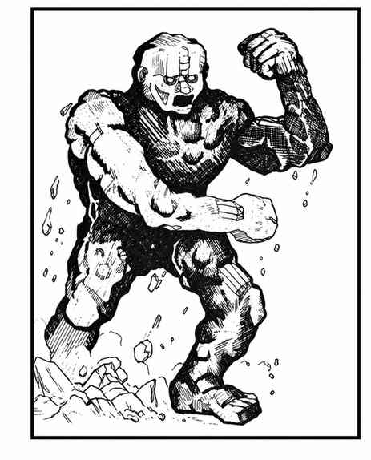
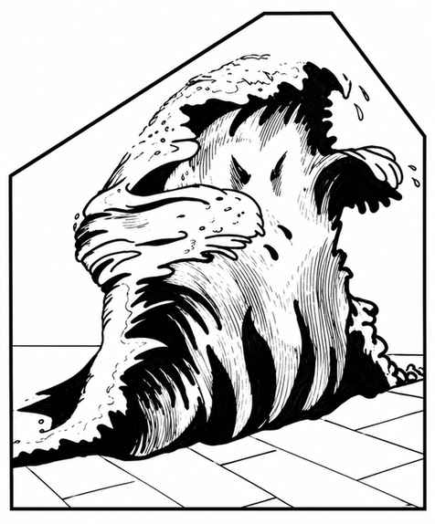

元素生物 · Elemental
通常能遭遇的元素生物有四种：气、土、火与水元素。它们力量强大，却相对愚钝，是从相应元素位面以魔法召来的生物。不同元素生物的力量与特征各异，分别见下列小节。
元素位面上还存在比可召唤者更强大、更聪慧的元素生物，以及自由行动的原生居民；本书其他条目另有介绍。此处仅简述各元素位面中最杰出的原生元素生物。
召唤与控制
召唤出的元素生物分为三种生命骰规模，适用于所有元素类型：
| 召唤方式 | 生命骰 |
|---|---|
| 法术召唤 | 16 |
| 召唤装置召唤 | 12 |
| 法杖召唤 | 8 |
每种召唤方式对每种元素生物每天至多使用一次。例如，魔法师有两根合适的法杖时，每根法杖每天各可召来一种元素生物，但不能是同一类型。若能施展数种召唤元素生物的法术，每个法术也必须召来不同类型。不过，魔法师若同时拥有召唤装置与法杖，便可能召来三只同类型元素生物。
元素生物愚钝，且厌恶被召唤；召唤者必须专心控制。若未能控制，元素生物有 75% 概率转而攻击召唤者，并径直朝召唤队伍冲去，沿途攻击任何生物。失控后无法重新控制；失控的元素生物会在 3 回合后返回自己的位面。若未发生反噬（概率 25%），它会立即返回自己的位面。控制时，召唤者必须保持静止，且不得遭受身体或心智攻击，包括投射武器攻击或干扰。任何时候最多只能控制一只元素生物。
元素生物不受普通武器伤害；魔法武器必须具有 +2 或更高加值才能命中。没有魔法能力的生物，除非拥有 4 颗或更多生命骰，否则无法伤害元素生物。魔法能力包括麻痹、毒素、酸液、吐息武器，甚至“不受普通武器伤害”这一特质。因此，狗头人、地精、兽人等既没有魔法特性、生命骰也不足 4 颗，无法影响元素生物；食人魔有 4 颗生命骰，因而能攻击并造成伤害。不过，若狗头人持有 +2 魔法剑，该武器仍能伤害元素生物。
魔法师可对召唤出的元素生物施展解除魔法，并明确以解除控制而非攻击元素生物为目标，从而接管并控制它。成功概率按施法者等级与原召唤者等级之比确定。若法术失败，元素生物会强化至每颗生命骰 8 点生命值，控制者必须付出双倍专注；此外，元素生物会憎恨试图夺取控制权的魔法师，一旦失控便会追杀此人。
气元素 · Air Elemental
 |
|
气元素唯一的移动方式是飞行，也可以低于标示速度移动。在空中战斗时，命中概率 +1，每颗伤害骰另加 +2 点伤害。
奉命后，气元素可化作旋风：倒截圆锥，底部直径 2 寸、顶部直径 6 寸，高度以寸计，数值等于该气元素的生命骰数，即 8、12 或 16 寸。若上方障碍使其无法达到完整高度，旋风的力量减半。完整旋风持续 1 个近战轮，会卷走并杀死所有生命骰少于 3 颗的生物；未被直接杀死的非飞行生物受到 2–16 点伤害。形成或消散旋风都需要整整 1 回合。
气元素位面上存在一些有智慧的气元素，拥有超越上述召唤元素生物的特殊能力；其中最强大者为女王，她也具备某些魔法能力。
土元素 · Earth Elemental
 |
|
土元素行动较慢。跨越水域时，它必须钻入地下、从水床下方穿过，路程可能十分遥远。对站在土地上的生物造成全额伤害；对飞行、悬浮等未踏地的对手，每颗伤害骰减 2 点。攻击建在石头或泥土上的建筑时，它们如同超级攻城锤，可造成 2–8 点结构伤害（普通小屋约有 7 点结构值）。土元素可从泥土或石头中召来。
据说土元素位面上存在一位体型惊人的首领。
火元素 · Fire Elemental

 |
|
火元素极为可怖，是凶猛的对手；它们触碰任何可燃物都会使其起火。对抗使用火焰的敌人时，每颗伤害骰减 1 点。水会阻挡火元素；它们无法越过不可燃液体。
火元素位面存在许多不同种类的火元素与类似生物。传说统治所有火元素的领主名为“暴君”。
水元素 · Water Elemental
 |
|
水元素几乎只能在水中行动，离开其元素环境不得超过 6 寸。召来水元素通常需要相当大量的水：至少 1,000 立方尺的水池；不过数个大酒桶的麦酒或葡萄酒也足够。在水元素位面之外，其力量会减弱，每颗伤害骰减 1 点；在水中则能发挥全部威力，移动更快，还能掀翻小船（每颗生命骰可掀翻 1 吨船只），或减速、拦停船只（每点生命值可拦停 1 吨船只；若船只吨位更大，可按吨位与生命值之比计算减速程度）。
水元素位面还存在许多其他元素形态。具有智慧、自由行动的生物十分常见，也有远比此处所述更强大的元素生物；它们可能由一位神一般的君王统治。